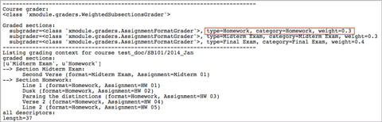
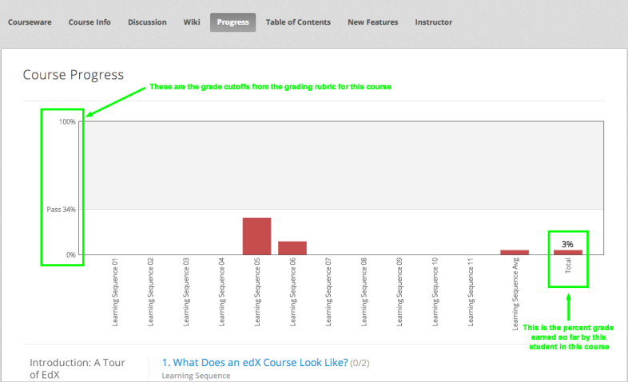
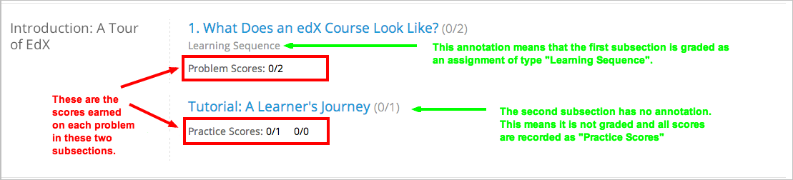

10.11. 学生成绩与成绩评定¶
创建课程后，您可以随时回顾您课程的评分设置，并以此评定学生成绩。 您可以为单个学生评分、为所有学生评分，或针对某道问题评分。 关于评分数据以及评分时可以做出的改动，请看下面的内容：
您可以审核某个学生对于某道问题提交的答案，下载全课程范围内的答题数据， 或者查看某道问题所有的答题数据图表。详见 回答问题数据.
关于如何制定评分政策，以及如何使用提问模块，请参考 设定计分政策 或 创建问题组件.
10.11.1. 查看课程的评分设置¶
您可在教师面板中查看需要评分的任务类型，以及他们对应的比重。
在Studio中创建课程时，您可以为课程制定评分标准。 课程运行时，您可以查看课程中各项任务类型在学习管理系统中的表现以及它们的比重，以此决定学生的评分。
查看课程现况
单击“导师”→“数据下载”→“评分设置”
页面显示的是您课程中的任务列表。本例中，“作业”项目在评分中的比重为0.3（50%）。
在Studio中，您可以通过“设置”→“评分”更改这些信息。更多信息请参考 设定评量类型.
Important
课程开始后，任何针对课程评分政策、 需评分内容以及评分组件的改动会影响学生的课堂体验以及课程数据分析。 如果不得不作出更改，请在“课程信息”等页面告知学生， 并仔细咨询研发人员。
10.11.2. 为所有学生生成成绩（适用于所有课程）¶
您可以为学生生成成绩，并下载成绩文件。
当您第使用运算功能计算学生成绩时，edX服务器会自动开始一个进程。 课程的评分设置以及学生数量决定了该进程时间长短。 评分进程完成后，您可以下载CSV格式的学生成绩单。
如果课程学生人数少于200人，您还可以在教师面板中选择复核学生成绩。详见 学生成绩复核（小规模课程）.
如何生成成绩单：
Important
由于成绩单文件中包含保密信息，个人认证数据可能受限于家庭教育权与隐私权（FERPA）, 请确保打开或保存此文件时遵循您所在机构的数据管理员政策。
查看课程现况
单击“导师”→“数据下载”
单击“生成成绩单”
此时会显示评分进度。这个过程可能要花几分钟时间，但是您可以切到其他页面，边干其他工作边等候。
刷新浏览器页面，将滚动条拖至“正在处理的教师任务”区域查看评分进程
评分完成后，一个.csv文件链接出现在 正在处理的教师任务 部分上方。 文件名为
{course_id}_grade_report_{datetime}.csv格式。 最新生成的报告出现在列表的最上方。要打开或者保存成绩单文件，请找到并点击成绩单链接。
您可以将.csv文件在制表软件中打开，便于排序、生成图表和对比数据。
Note
为防止学生数据意外泄露，您只能通过本页面中的链接下载成绩单文件。 本链接的有效期只有5分钟，所以不要将本页面中的信息复制到其他地方再次使用。 另外，如果页面打开时间超过5分钟，链接一样会失效，请刷新页面获取新链接。
10.11.2.1. 解读成绩单¶
成绩单是一个带有时间标记的CSV文件，其中包括：信息列， 即定义学生身份的信息集合——ID，email，用户名，等等； 任务列，即您课程中的所有评分项目。
成绩单中的分数是按任务类别显示的。其中一列显示您评分结构中的每项任务， 包括每次作业、实验，期中考试，期末考试和其他您添加在课程中的任务类型。
Note
成绩单不包括任务中的每个独立问题信息，也不包括学生答案分布。 关于显示问题层级信息的报告，请参阅 为所有学生生成成绩（适用于所有课程） 。
报告显示每个学生的注册追踪。专业和验证踪迹学生的报告中还显示学生是否验证了ID。 报告显示每个学生是否有资格获得证书（取决于他的成绩此时是否达到了要求）， 证书是否已经生成，以及证书类型。
如果您的课程包含 cohorts 或 content experiments ， 成绩单中将包含附加列，显示每个学生属于哪个队列或内容小组。

CSV文件每行显示一名学生的成绩，纵列信息如下：
学生身份信息：包括永久ID、email地址和用户名。
综合评分：即学生当前获得的总评分。该值表示为小数： 如果一个学生的评分为0.65，即表示他获得了本课程65%的学分， 如果为1，则表示满分。
每个{assignment type} {number}表示学生的各项得分。 例如，HW03列显示的是该学生第三次作业的得分。
{assignment type} Avg表示该学生某项任务的平均分，比如HW Avg即作业平均分。
- 如果课程中使用了 cohorts ，
队列名 列显示每个学生所在的队列，包括默认队列。
没有加入任何队列的学生，此项为空。
- 如果课程中有 content experiments ，
实验小组 列显示每个学生所在的实验小组。此列的标题显示小组配置的名称。
如果学生没有加入实验小组，此项为空。如果您有多个实验小组配置，每个小组配置中都将含有此列。
注册追踪 一列显示每个学生是否已在课程的荣誉准则、认证或专业教育轨迹中注册。
验证状态 一列只对注册了身份验证或专业轨迹的学生开放。 此列中显示已验证或专业教育学生是否已经通过网络摄像头提交照片和官方身份证明验证了edX中的ID。
证书资格 一列表明学生是否有获得课程证书的资格。 “Y”表示学生在报告生成之前已经获得了高于证书要求的成绩。 所有的白名单学生，无论成绩是否已经取得，此列都为“Y”。 “N”表示学生未获得证书要求的成绩，或者所处国家无法寄送证书。
对于具备获得证书资格的学生，证书发放 列中的“Y”值表示证书已生效。 “N”值表示学生不具备获得证书的资格。
证书类型 一列说明学生能够取得的证书类型，比如“荣誉证书”或“认证证书”。 如果学生没有资格获得证书，或者课程的证书未生成，此项将显示“N/A”。
10.11.3. 为所有学生生成成绩（适用于所有课程）¶
对于任何一门课程，您可以为问题计算成绩以及生成可供下载的成绩报告。 课程的成绩单显示每个学生在每个问题的得分，以及每个问题的总分值。 此外，报告还显示每个学生的最终成绩。
生成及下载学生的成绩单请遵循以下步骤。
Important
由于成绩单文件中包含保密信息，个人认证数据可能受限于家庭教育权与隐私权（FERPA）, 请确保打开或保存此文件时遵循您所在机构的数据管理员政策。
查看课程现况
单击“导师”→“数据下载”
单击“生成成绩单”
此时会显示评分进度。这个过程可能要花几分钟时间，但是您可以切到其他页面，边干其他工作边等候。
刷新浏览器页面，将滚动条拖至“正在处理的教师任务”区域查看评分进程
报告完成后，一个.csv文件链接出现在 正在处理的教师任务 部分上方。 文件名是
{course_id}_problem_grade_report_{datetime}.csv格式的。最近生成的成绩单在列表顶部。
要打开或保存成绩单文件，找到并点击您需要的成绩单链接。
您可以在制表软件中打开.csv文件，以便于排序、生成图表和对比数据。
Note
为防止学生数据意外泄露，您只能通过本页面中的链接下载成绩单文件。 本链接的有效期只有5分钟，所以不要将本页面中的信息复制到其他地方再次使用。 另外，如果页面打开时间超过5分钟，链接一样会失效，请刷新页面获取新链接。
10.11.3.1. 解读成绩单¶
课程的成绩单是时间戳 .csv文件，文件中包含每个注册学生的ID、email地址、用户名和每个问题的得分/总分快照。
成绩单中每个问题有两列包含您的评分配置。每一次作业、实验、期中考试和期末考试都有一列显示得分， 另一列显示总分。此外成绩单以小数形式显示每个学生的总成绩。
CSV文件每行显示一名学生的成绩，纵列信息如下：
- 学生身份信息：包括永久ID、email地址和用户名。
- 综合评分：即学生当前获得的总评分。该值表示为小数： 如果一个学生的评分为0.65，即表示他获得了本课程65%的学分，如果为1，则表示满分。
- 对于每个问题（以任务、子章节和问题名标识），都有一列显示每个学生获得的分数。 如果学生没有访问过问题，此项显示“N/A”。如果学生没有回答问题，此项显示“0”。
- 对于每个问题（以任务、子章节和问题名标识），都有一列显示问题的总分值。 如果学生没有访问过问题，此项显示“N/A”。
10.11.4. 学生成绩复核（小规模课程）¶
课程人数不到200人时，您可以查看教师面板中的成绩簿进行成绩复核。
查看课程现况
单击“导师”→“学生管理”。如果课程学生人数少于200人，该标签会包含一个“学生成绩簿”子标签
单击“查看成绩簿”
成绩簿包含下列功能：
您可以单击每行的学生用户名，查看该学生的“课程进度”页面。详见 查看学生进度.
每列{assignment type} {number}显示的是学生在该项目中的得分。
成绩簿没有滚动条，但是可以拖动：如果您想查看被边框挡住的内容，单击成绩簿后向左向右拖动即可。
如果某个任务类型下包含多个任务，则{assignment type} Avg一栏中会显示该任务的当前平均分。
“总分”一栏显示的是学生目前获得的课程总学分。该值表示为整数： 65分表示该学生获得了65%的课程学分，满分为100。
您可使用“查找学生”选项筛选成绩数据信息。该选项区分大小写，请注意不要输入错误的用户名。
10.11.5. 查看学生进度¶
您可以在成绩单中找到该学生所在行，或通过该学生的“进度”页面查看该生的课程进度。 “进度”页面中有一张图表，显示了该生目前每个评分项目的得分以及总分。
您需要提供email地址或用户名，才能查看某个学生的“进度”页面。 您可查看课程内的学生，也可查看被开除的学生。
学生登录课程时也可以看见类似的图表，但只能看见自己的进度。详见 学生视角下的课程进度页面.
如何查看学生的“进度”页面
查看课程现况
单击“导师”→“学生管理”
在“查看学生成绩”区域，输入该学生的email地址或用户名
单击“学生进度页面”。打开前文所说的图表。
“进度”页面中有一张图表，显示了该生目前每个评分项目的得分以及总分。 The chart does not reflect any cohort or experiment group assignments.
想了解某个项目的信息，将光标移到该值，会显示一段简短的描述文字。

图表左下方列出的是课程小节，右下方列出的是包含任务的课程单元。 同时还会显示该学生回答问题的得分。
10.11.5.1. 解读学生进度页面¶
学生进度图标各项目的排列顺序与成绩单中的顺序一致。但是，课程总分的位置不同。
在下面的成绩单中，学生当前得分为0.43
该生前四次的作业得分均为满分，但是最近三次得分均为0分
不过请注意，学生作业的平均得分为0.666666667: 在本课程作业评分中，会去掉一个最低分， 因此平均分是基于六次作业成绩得出的，而不是七次。
该生其中考试成绩为0.75，期末考试成绩为0。
在该生的“进度”页面中，您会发现，基本信息都差不多相同，但是最右侧的“总分”为43%
进度图标的y轴显示的是两块成绩区域（0~60,60~100）本例中， 及格分设置为60%，因此，课程结束后，成绩高于0.60的学生可以获得合格证书。
Note
“进度”页面显示的分数是该生提问数据库中得分的及时快照。 因此，这个分数与实际的答题分数可能会不同步。举个例子，在某次课堂任务中， 已经发布的题目比重发生了变动，但是有些学生并没有重新提交答案， 这就可能导致数据的不同步。
10.11.5.2. 学生视角下的课程进度页面¶
学生可以单击课程导航栏中的“进度”标签查看课程进度。 页面顶部显示的是该学生已经评分的项目及得分，下面是各小节的得分。 进度可以显示为一张图标，里面包含所有任务的得分、当前总得分以及每部分的及格分。 试看下例：
该生可在本页面中发现，edX101课程的及格分为34%，评分项目包括一个任务类型， 其下总共包含11个任务。该生目前只成功完成了两项任务，因此当前得分为6%。 将鼠标悬停在各个任务标签上，可以查看每项任务占总分的比重是多少。
再往下看，会看见该课程所有小节的列表，记录了该生在课程中回答问题的所有得分。试看下例：
{kind=link}
注意，计分小节的得分称为“提问得分”，不计分小节的得分称为“实践得分”。
10.11.6. 调整成绩¶
学生回答完问题后，如果您更改问题，则会影响学生成绩。 关于如何在Studio中更改问题，参考 修改已发布的问题.
如果不得不作出更改，则应该对受影响的学生重新计分：
- 重新为提交的答案评分。您可以为单个学生或所有学生重新计分。详见 为学生答题重新计分.
- 将学生尝试回答问题的次数归零，以便学生再次尝试。 您可以为单个学生或所有学生重新计算尝试次数。详见 学生答题尝试次数归零.
- 完全清除学生关于该问题的历史数据，或“历史状态”。您一次只能删除一名学生的数据。 比如，如果您发现只有少数学生需要删除数据，您可以重新编辑问题， 然后删除受影响学生的历史数据，以便学生再次尝试。详见 删除学生答题历史数据.
您需要提供新问题的位置ID，才能调整学生成绩。详见 查找某个问题的位置ID.
10.11.6.1. 查找某个问题的位置ID¶
创建课程问题时，edX系统会自动给问题分配一个独一无二的定位ID。 您需要提供这个ID，才能调整学生的答题成绩，或查看问题相关数据。
如何查找定位ID：
查看课程现况
单击“课件”，导航至问题所在单元
查看问题，单击“员工调试信息”
问题相关信息即显示出来，包括“位置”。
- 选择整个定位ID，右击→“复制”。
随便点击查看窗口外的页面，即可关闭窗口。
10.11.6.2. 为学生答题重新计分¶
您在课程中提出的每个问题都应有一个标准答案， 同时提供其他可行答案。如果您决定对这些内容作出更改， 则需对之前提交的答案重新评分。此项操作可以针对单个学生，也可针对所有学生。
Note
只有在Studio中输入正确答案的问题才能重新评分，
通过其他外挂评分插件输入答案的问题则无法执行重评操作。
10.11.6.2.1. 为单个学生提交的答案重新评分¶
首先，您需要知道该生的用户名或email地址
- 查看课程现况
- 单击“课件”，导航至问题所在组件
- 查看问题，单击“员工调试信息”。打开查看窗口
- 在“用户名”字段中输入该生的用户名或email地址，单击“答案重评”。成功后，会弹出消息提示
- 随便点击查看窗口外的页面，即可关闭窗口
10.11.6.2.2. 重评所有学生的答案¶
您首先需要知道问题的定位ID，详见 查找某个问题的位置ID. 重评学生的答案
查看课程现况
单击“导师”→“学生管理”
在“课程评分调整”区域内，输入问题的定位ID，单击“重评所有学生提交的答案”
弹出的对话框提示您，重评工作正在进行，单击OK
这一步可能要花几分钟时间，不过该进程可以后台运行，您可以边等待边干别的工作。
（原文序号错误）单击“查看后台学生历史任务”或“查看后台问题历史任务”查看重评进程。
此时会显示一个表格，阐明当前重评进程。
Note
本流程也可用于单个学生。 只需在“评分调整”区域内同时输入学生email地址/用户名以及问题定位ID， 单击“重评学生提交的答案”即可。
10.11.6.3. 学生答题尝试次数归零¶
创建问题时，您可以限制学生尝试回答问题的最大次数。 如果某道问题出现了意外情况，您可以将某个学生的尝试次数归零， 以便该生重新开始尝试。如果所有学生都受到了影响，则应将所有学生的尝试次数归零。
10.11.6.3.1. 将单个学生的尝试次数归零¶
首先，您需要提供该生的用户名或email地址
- 查看课程现况
- 单击“课件”，然后导航至问题所在的组件
- 查看问题，单击“员工调试信息”
- 在“用户名”字段中，输入该生的email地址或用户名，单击“尝试次数归零”，此时会弹出一条消息，提示操作成功。
- 随便点击查看窗口外的页面，即可关闭窗口
10.11.6.3.2. 将所有学生的尝试次数归零¶
您首先需要知道问题的定位ID，详见 查找某个问题的位置ID 。
然后：
查看课程现况
单击“导师”→“学生管理”
在“学生成绩调整”区域，输入该问题的定位ID，单击“重置所有学生的尝试次数”
此时会打开一个对话框，提示操作正在进行中，单击OK。
这一步可能要花几分钟时间，不过该进程可以后台运行，您可以边等待边干别的工作。
单击“查看后台学生历史任务”或“查看后台问题历史任务”查看进程。
此时会出现一个表格，显示当前重评进程。
Note
本流程也可用于单个学生。 只需在“评分调整”区域内同时输入学生email地址/用户名以及问题定位ID， 单击“重置学生尝试次数”即可。
10.11.6.4. 删除学生答题历史数据¶
首先，您需要知道该生的用户名或email地址，才能删除该生的所有答题数据。
Important
经本流程操作而删除的学生数据将无法恢复。
您可使用员工调试信息查看窗口或教师面板删除学生数据。
员工调适信息查看窗口：
- 查看课程现况
- 单击“课件”，然后导航至问题所在的组件
- 查看问题，单击“员工调试信息”，打开查看窗口
- 在“用户名”字段中，输入该生的email地址或用户名， 单击“删除学生数据”，此时会弹出一条消息，提示操作成功
- 随便点击查看窗口外的页面，即可关闭窗口
如果使用教师面板操作，则需提供问题的定位ID。详见 查找某个问题的位置ID.
- 单击“导师”→“学生管理”
- 在“评分调整”区域内同时输入学生email地址/用户名以及问题定位ID，单击“删除学生答题记录”